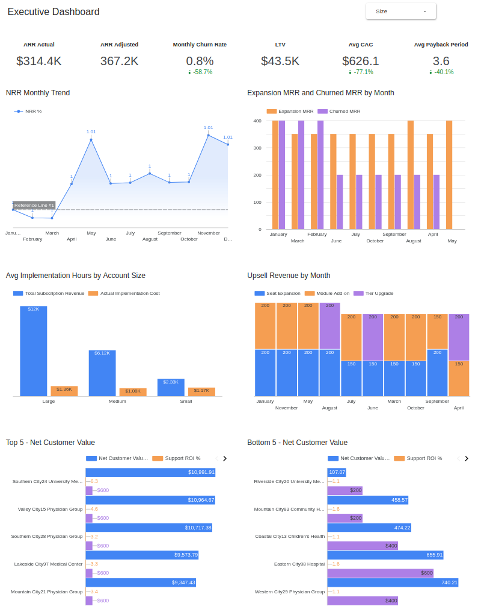
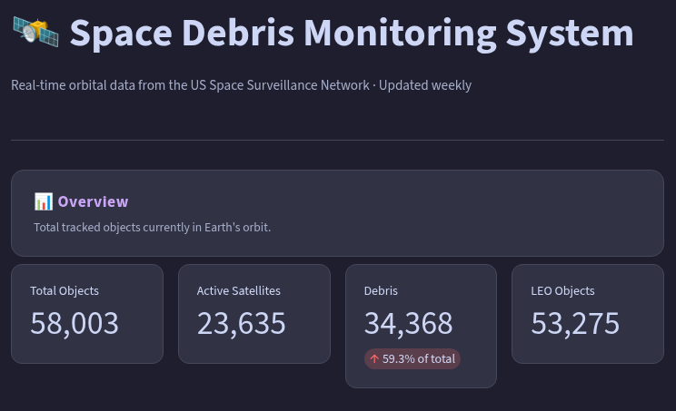

Zoireth Liendo
Customer Success & Revenue Operations Manager
Conectando Customer Success, Operaciones y análisis de datos para impulsar decisiones estratégicas.
Perfil Profesional
Profesional en Operaciones y Analítica con más de 5 años de experiencia. Me especializo en el diseño de frameworks de KPIs, mejora de la velocidad de implementación y habilitación de equipos de Customer Success mediante análisis avanzado de datos.
Áreas de Especialización
- Operaciones: CS Ops, Gestión de Implementaciones, Planificación de Capacidad.
- Datos & Analítica: SQL, Looker Studio, Tableau, Power BI.
- Liderazgo: Reconocida como MVP (2020, 2021, 2023) por gestión de programas de alto rendimiento en Teleperformance Colombia con Cisco.
Proyectos Destacados

Análisis de Implementación HealthTech
Análisis de eficiencia de costos y optimización de recursos para implementaciones B2B SaaS, revelando subejecución de costos del 63.8% y desbalance del 87.4% en asignación a soporte.
Ver Caso de Estudio →
Análisis E-commerce Olist
Análisis estratégico de logística y retención de clientes para el marketplace más grande de Brasil.
Ver caso de estudio →
Desechos Espaciales y Congestión Orbital
Proyecto de data storytelling que analiza el crecimiento de desechos orbitales, zonas de congestión y responsabilidad por país utilizando datos de Space-Track.
Ver caso de estudio →
Monitor de Basura Espacial – Pipeline de Análisis en Vivo
Pipeline de datos automatizado de extremo a extremo: GitHub Actions extrae datos orbitales actualizados desde la API de Space-Track cada semana y los sirve en una app interactiva de Streamlit.
Ver App → Ver Repositorio →